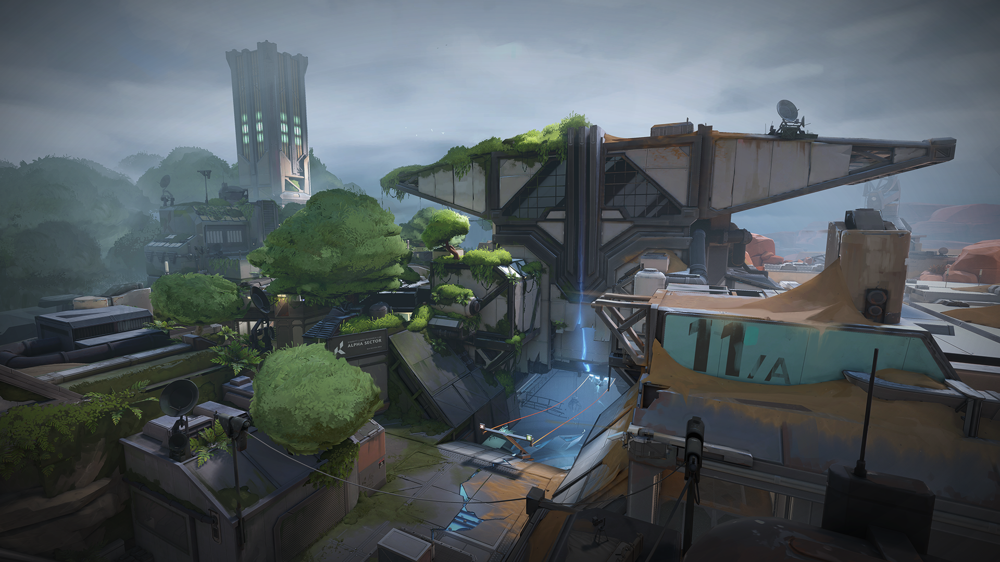

Images
Ascent

Inspirado en Italia, este mapa puede ser un dolor de muelas con infinidad de pasillos y zonas abiertas difíciles de dominar
Bind

La lucha en este desierto esta definida por sus curiosos portales que dan lugar a multitud de estrategias y rotaciones interesantes
Breeze

Mapa abierto que ofrece multitud de posibilidades de ataque, otorgando especial importancia a la zona central del mapa que definirá las rotaciones
Fracture
Dividido en dos universos paralelos, este mapa nos ofrece una interesante versión donde los defensores son acorralados en la zona central del mapa
Haven

El mapa más grande de Valorant, puede ser todo un desafío para aquellos atemorizados de sus tres grandes localizaciones de ataque
Icebox

Mapa centrado en dos puntos abiertos, cuyo principal distintivo es la enorme verticalidad que ofrece, dando lugar a posiciones inesperadas del enemigo
Split

Mapa interesante donde las tácticas defensivas tienen más valor que las ofensivas, con tres largos caminos que definirán una resistencia voraz
Range
Mapa de práctica por excelencia en Valorant, aquí podrás entrenar tus habiliades y superarlímites entrenando tu puntería
Master 3
Última máster donde competirán los mejores equipos de cada región por un puesto en el mundial de Diciembre de 2021